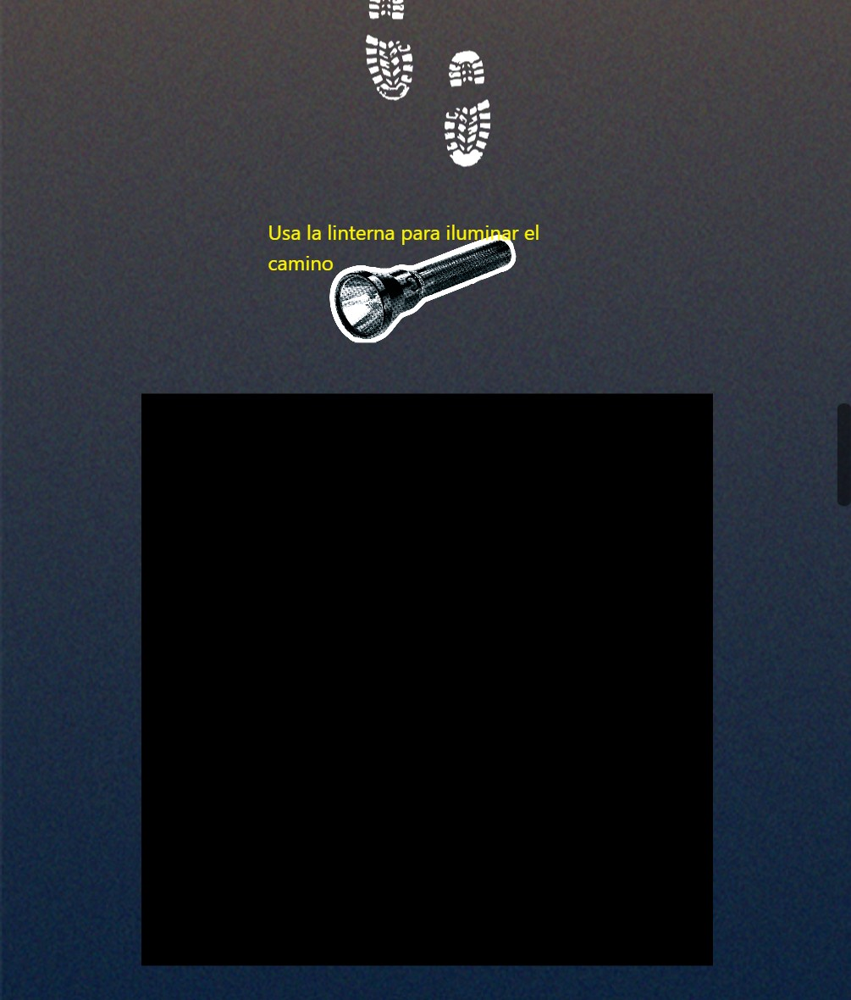
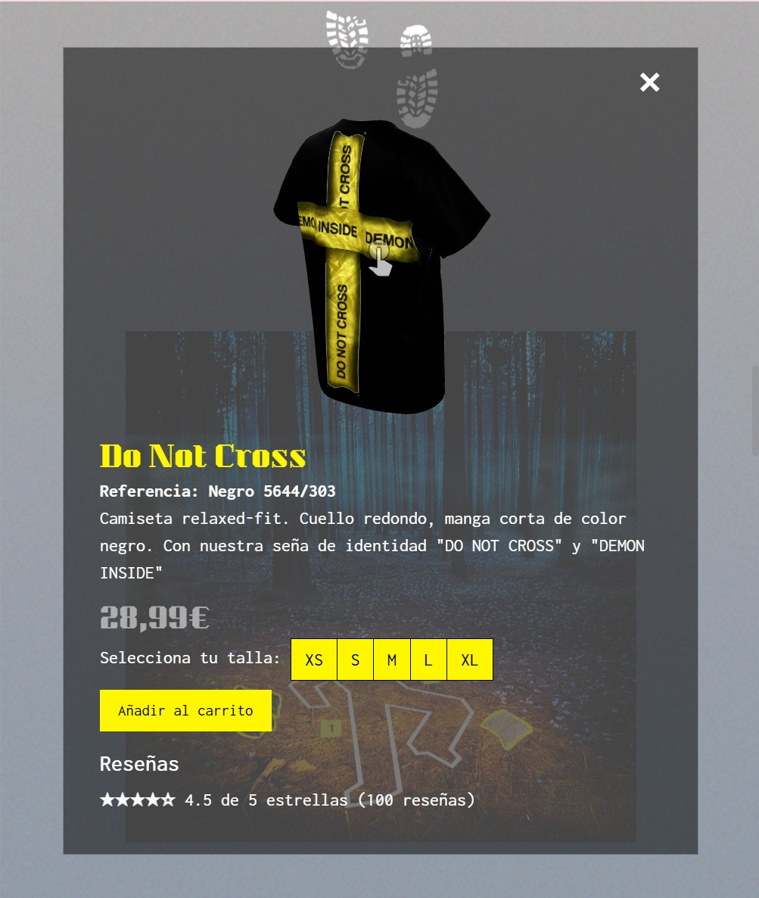

Gotdem
This team project consisted of creating a public website with an integrated blog as part of a narrative e-commerce concept for an online T-shirt store. The idea was to design an immersive digital experience inspired by early 2010s flash games and interactive portfolios, blending mystery, storytelling, and playful interaction. While the narrative, texts, and visuals were developed collaboratively, and the blog was managed by other members of the team, I was fully responsible for programming the entire website.
Briefing
The main goal was to go beyond a standard e-commerce platform and create an interactive journey where users had to explore a story before accessing the products. The challenge was to merge a strong narrative with digital design and interactivity, ensuring a cohesive user experience.
Development
I programmed the website using HTML, CSS, and JavaScript, with Bootstrap to structure a responsive interface. I implemented animated effects with Locomotive Scroll, giving movement to elements such as trees and crime-scene tape, and developed a custom drag-and-drop flashlight using jQuery UI to let users illuminate parts of the scene. For product visualization, I integrated Model Viewer to allow real-time 3D interaction with the T-shirts. Hover effects and interactive elements guided navigation, ensuring a dynamic and immersive browsing experience.